Explore Napoli
A Brief History
Naples, or Napoli, was founded as a Greek settlement Neapolis and later became a Roman resort town with nearby Pompeii and Herculaneum. Angevin, Aragonese, and Spanish viceroys ruled the Kingdom of Naples from the Middle Ages to 1860. The historic center contains castles, churches, and underground Roman remains. UNESCO inscribed the centro storico as a World Heritage site in 1995.
Attractions Map
Top Sights & Activities
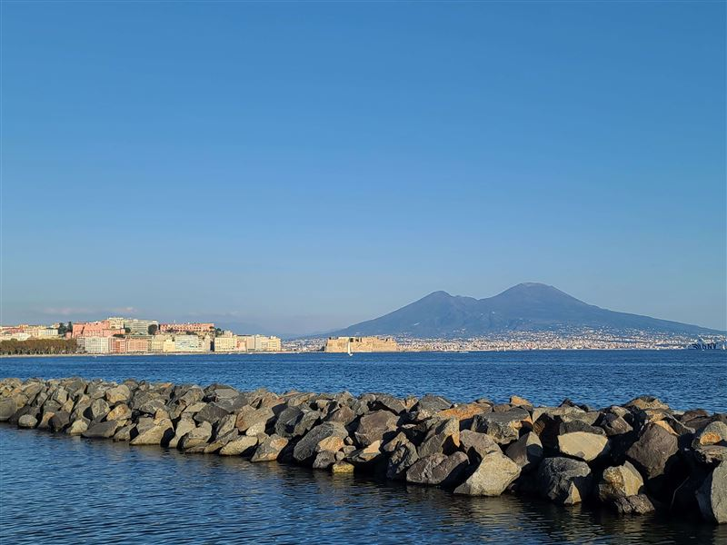
Mount Vesuvius
This active somma-stratovolcano rises above the Bay of Naples within a national park. Its eruption in 79 AD buried Pompeii and Herculaneum under ash and pumice. Trails lead to the crater rim from the ticketed entrance at about 1,000 meters; guides explain ongoing monitoring of seismic activity.
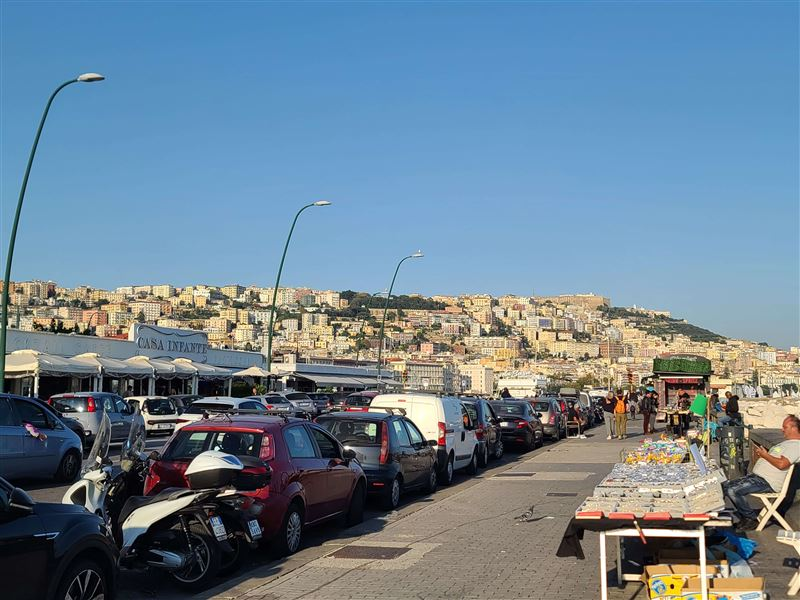
Lungomare Mergellina
This waterfront walk links Mergellina harbor to Posillipo along the Gulf of Naples. Once a fishing village, the strip gained villas and cafes in the 19th century. Views extend toward Vesuvius and Capri; small beaches and seafood restaurants line the road beside the marina.
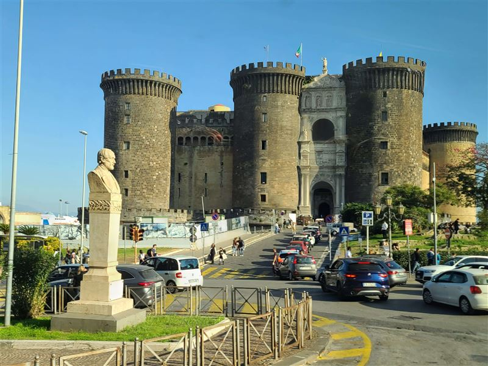
Castel Nuovo
Charles I of Anjou began this castle in 1279 as a royal seat beside the port. Known as Maschio Angioino, it later housed Aragonese and Spanish viceroys. Five round towers and a triumphal arch entrance survive; the interior includes a Renaissance chapel and museum rooms on Neapolitan history.
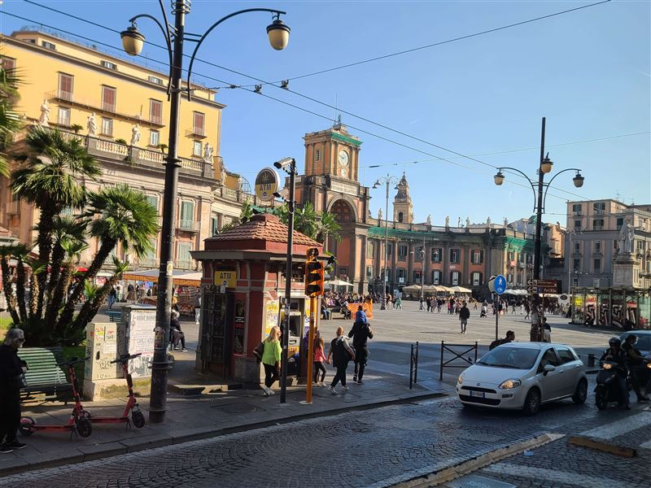
Piazza Dante
Named for Dante Alighieri, whose bronze statue stands at the center, this square was once the market square of Mercatello outside the medieval walls. Port'Alba book stalls open off one side. Students from the nearby university fill the cafes that ring the porticoed space.
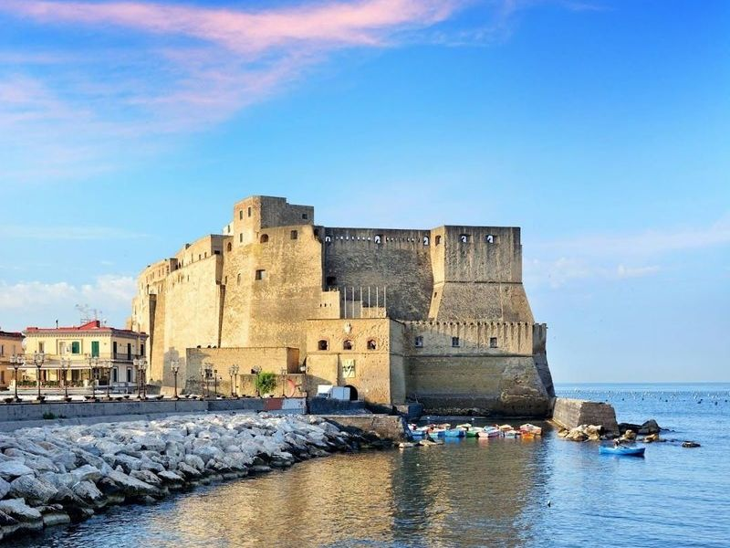
Castel dell'Ovo
Ovo Castle, also known as Castel dell'Ovo, is an imposing fortress and former royal residence located in Naples. It is the oldest remaining fortification in the city, dating back to the 6th century BC. The castle's name originates from a legend about Virgil, a renowned Roman poet who was believed to have placed a magical egg into its foundation. Another version suggests that it was named for its unique shape.
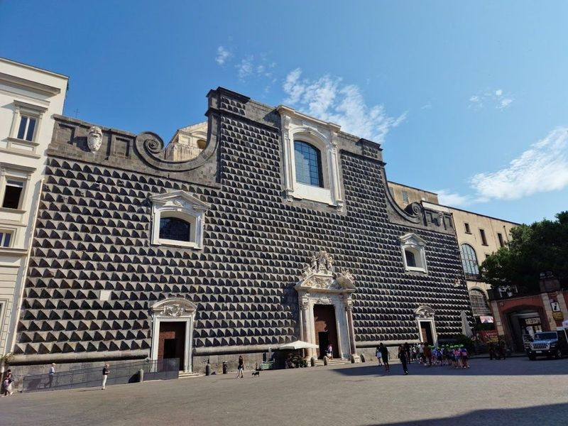
Chiesa del Gesù Nuovo
Chiesa del Gesù Nuovo is a example of Neapolitan Baroque architecture, nestled in the charming Piazza del Gesu Nuovo. This church, built between 1584 and 1601, boasts a unique stone facade that stands out with its quirky design reminiscent of Renaissance palaces. Inside, travellers are treated to an opulent display of religious art, including intricate frescoes by renowned Italian artists like Francesco Solimena.
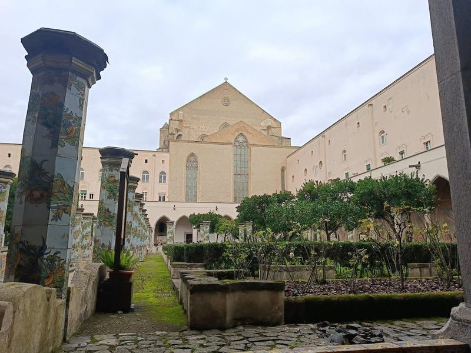
Complesso Monumentale di Santa Chiara
The Complesso Monumentale di Santa Chiara is a religious complex in Naples dating back to the 1300s. It includes a vast church, beautifully adorned with 17th-century frescos and exquisite majolica tiling. The cloister garden offers a serene escape with fragrant citrus trees and lilac lavender blooms, along with 72 ceramic-tiled columns decorated with hand-painted flowers, grapes, and rural scenes.
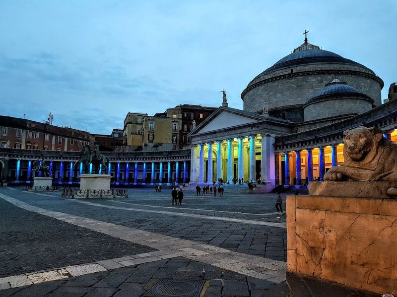
Piazza del Plebiscito
Piazza del Plebiscito is a must-visit landmark square in Naples, Italy. This pedestrianized square is home to the impressive Royal Palace and features equestrian statues. It serves as a starting point for many tours in Naples due to its central location and proximity to major tourist attractions like Castel Nuovo, Teatro di San Carlo, and the Quartieri Spagnoli.
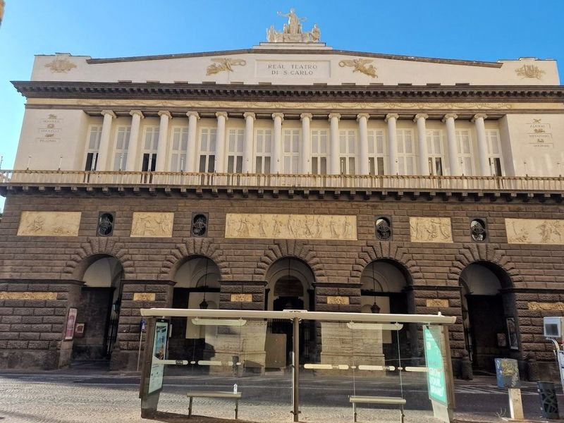
San Carlo Theatre
San Carlo Theatre, located near the Royal Palace and Galleria Umberto in Naples, is the oldest continuously running public opera venue globally. Commissioned by King Charles III of Naples and restored after a fire in 1816, it boasts a magnificent Neoclassical building with an opulent horseshoe-shaped auditorium and red and gold furnishings. The venue offers guided tours that include visits to foyers, the main hall, and the royal box.
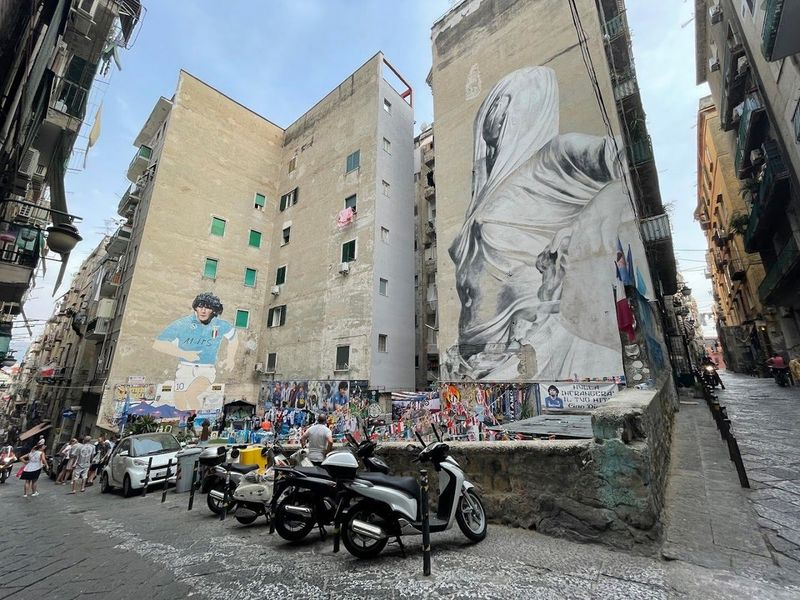
Murale Diego Armando Maradona - Quartieri Spagnoli
The Murale Diego Armando Maradona in the Quartieri Spagnoli district of Naples is a legendary tribute to the footballer. This mural, considered the most famous of all, serves as an altar for Neapolitans' adoration of Maradona. The square in front of the mural has been transformed into an open-air museum celebrating his legacy, with outdoor shops offering souvenirs and jerseys.
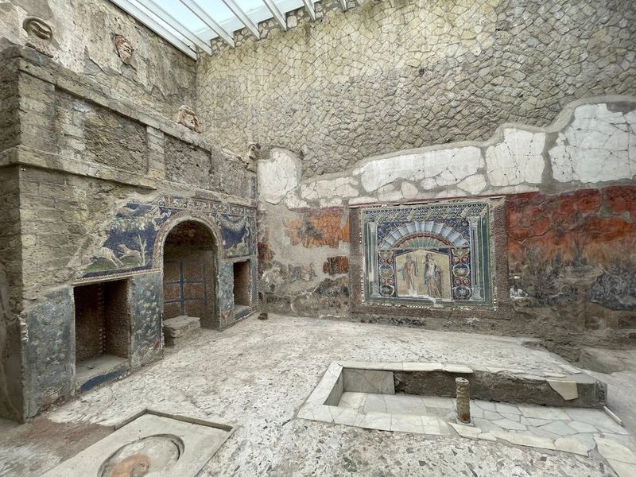
Archaeological Park of Herculaneum
The Archaeological Park of Herculaneum is a site that preserves the remains of the ancient city destroyed by Mount Vesuvius. It is part of a larger group of attractions in Naples and its surroundings. The park offers a unique insight into the daily life and culture of the ancient inhabitants through its excavations and precious artifacts. The Archaeological Museum of Herculaneum holds an exceptional collection that further enriches travellers' understanding of this civilization.
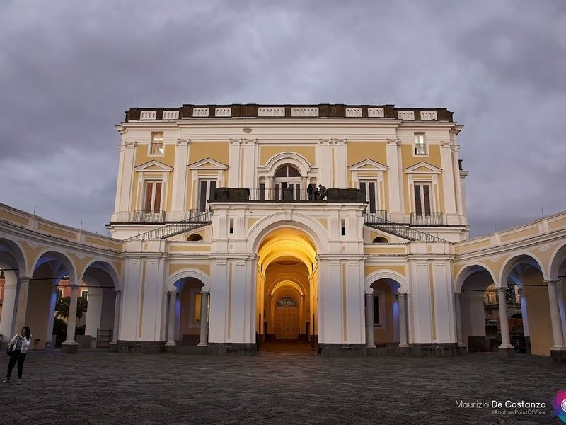
Villa Campolieto
Nestled along the picturesque Miglio d'Oro, Villa Campolieto is a 18th-century villa that showcases the grandeur of its time. Originally constructed in 1775 and designed by the renowned architect Luigi Vanvitelli, this villa boasts exquisite frescoes and remnants of formal gardens that whisper tales of its glorious past. Although it may appear somewhat forlorn today, with empty rooms and a sense of neglect, travellers can still appreciate its magnificent staircase and captivating artwork.
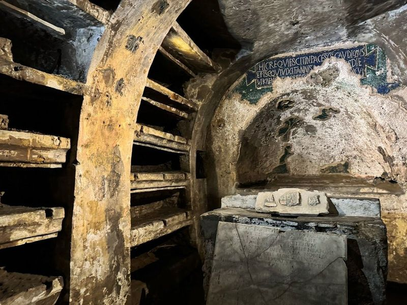
Catacombs of San Gaudioso
The Catacombe di San Gaudioso is a 3rd-century underground burial site in Naples, Italy. It features early Christian wall paintings and mosaics, some of which depict symbols from that era. The catacombs are located beneath the Basilica of Santa Maria della Sanita and were used as a burial site for St. Gaudioso, a bishop who lived in Naples until his death in 453 AD. Guided tours are available to explore this historical and religious site.
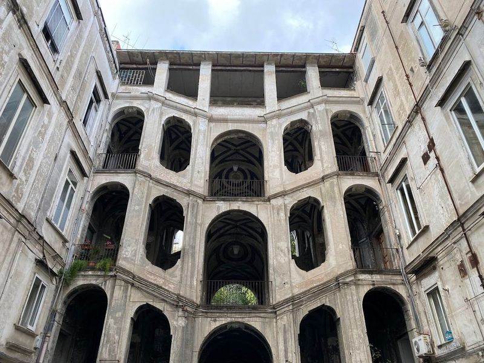
Palazzo Sanfelice
San Felice Palace is an 18th-century historic palace renowned for its elaborate Baroque architecture, particularly its staircase. It is located in the Rione Sanita district and shares the spotlight with Palazzo dello Spagnolo. While it's a residential building, travellers can still admire its beauty from the courtyard without disturbing the inhabitants.
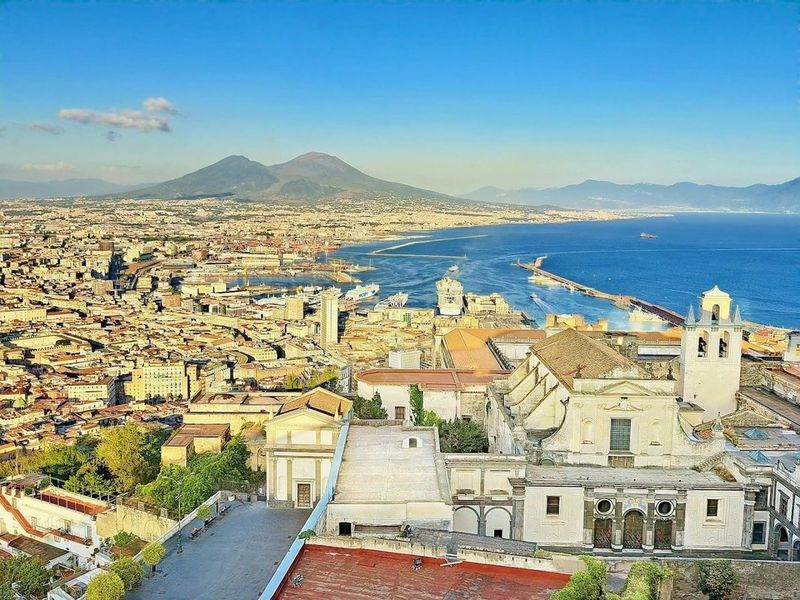
Castel Sant'Elmo
Perched atop Vomero Hill in Naples, Castel Sant'Elmo is a 14th-century fortress offering panoramic views of the city. From the Piazzale di San Martino, travellers can take in sweeping vistas that encompass the old town, Santa Chiara's bell tower, Spaccanapoli, Centro Direzionale, and beyond.
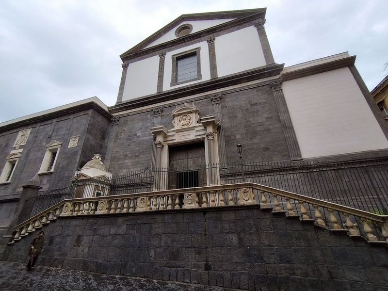
Church of Santa Maria la Nova
Santa Maria La Nova church and cloister are impressive examples of medieval culture and architectural design. They serve as remarkable testaments to the past, housing numerous magnificent tombs belonging to the local aristocracy. To enter this historical site, purchasing a ticket is required. Once inside, travellers have the privilege of taking non-commercial photographs without using flash photography.
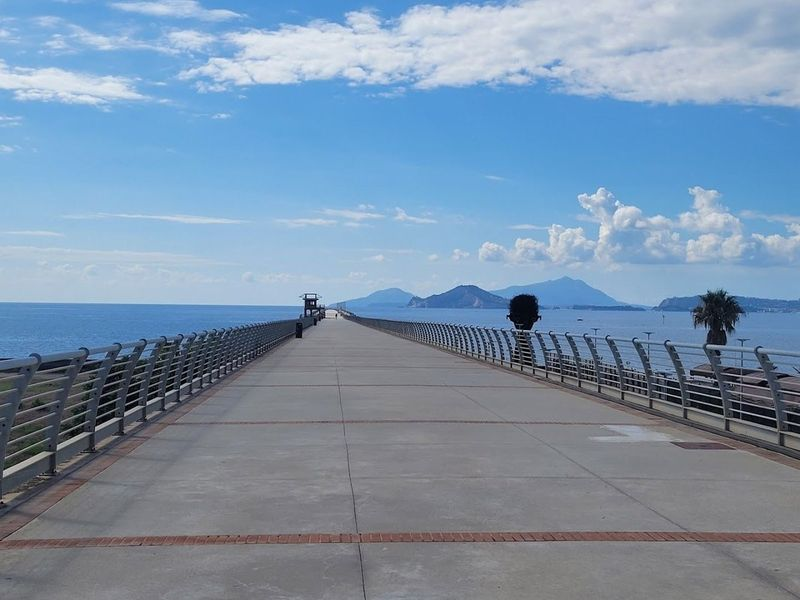
Pontile Nord di Bagnoli
Via Toledo, also known as Via Roma, is a bustling pedestrian-only street in downtown Naples that spans over 1.5 kilometers. It is lined with an array of chain stores, boutiques, and historic buildings. The street has a rich history dating back to the 16th century when it was built by the Spanish Viceroy Don Pedro of Toledo.
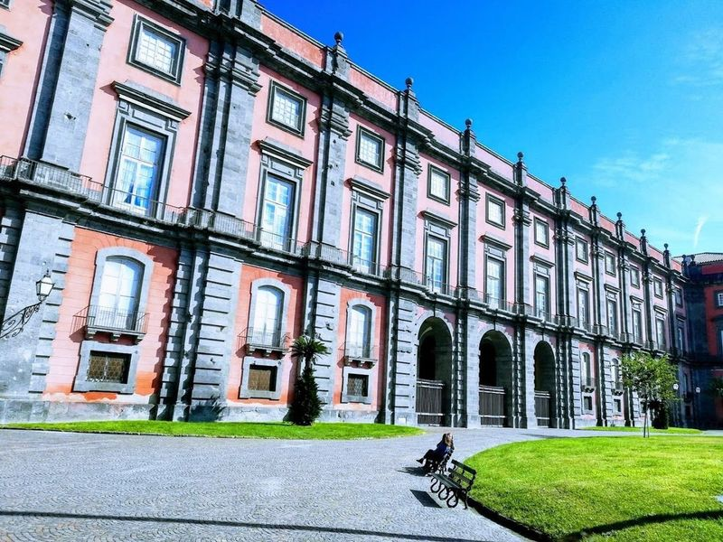
Museo di Capodimonte
Museo e Real Bosco di Capodimonte is a hidden gem that offers an extensive public park, woodland paths, statues, and fountains. The museum is now home to comprehensive collections of Italian art, featuring masterpieces by renowned artists such as Titian, El Greco, Caravaggio, and Raphael.
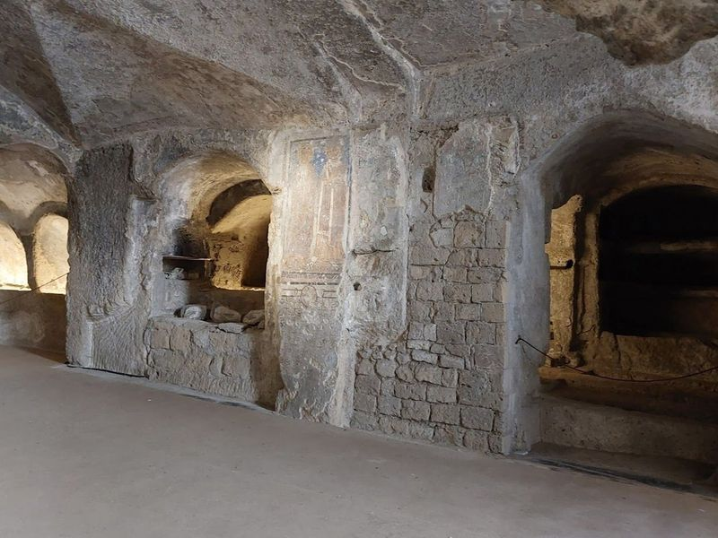
Catacombs of San Gennaro
Located less than ten minutes from the Capodimonte Museum, the Catacombs of San Gennaro is an underground Christian cemetery dating back to the 2nd and 4th centuries. travellers can explore this ancient site through guided tours, offering insights into early Christian history, burial practices, and legends surrounding San Gennaro, the city's protector.
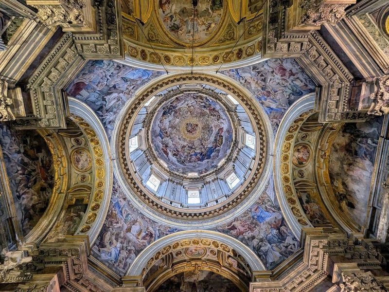
Cathedral of Santa Maria Assunta
The Duomo di Napoli, also known as the Cattedrale di San Gennaro, is a lavish cathedral in Naples with a neo-Gothic facade and art-filled chapels. Despite not receiving as much attention as its counterparts in Florence and Milan, this magnificent cathedral is a on any Italian itinerary. The complex spiritual, social, political, and cultural history of Naples is reflected in the mish-mash of architectural and religious elements resulting from numerous modifications over the centuries.
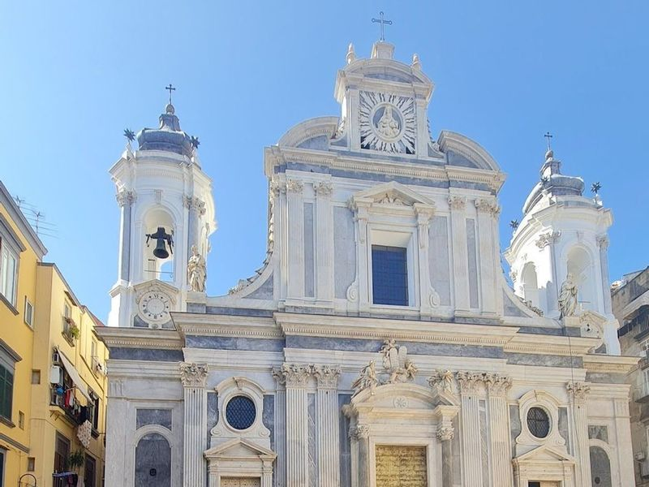
Via dei Tribunali
Via dei Tribunali is a historic street that serves as a vital artery in the heart of Naples, steeped in rich history dating back to ancient Greece and Rome. This vibrant thoroughfare is part of the city's three Decumani, which slice through Naples from west to east. Along its path, encounter significant landmarks such as Via Duomo with its cathedral and the lively Via San Gregorio Armeno, renowned for its artisan shops filled with traditional nativity scenes.
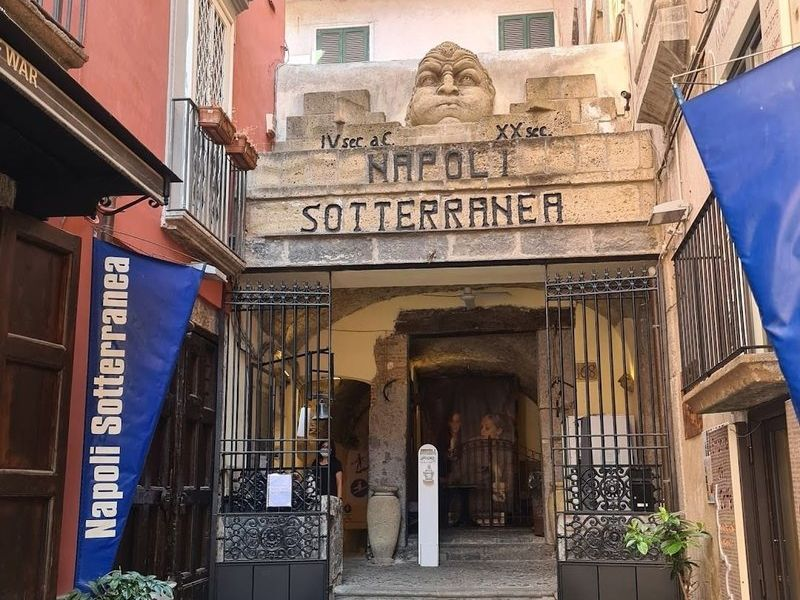
Underground Naples
Exploring Underground Naples is like stepping into a hidden world beneath the bustling streets of the city. This fascinating network, known as Napoli Sotteranea, spans over 40 miles and showcases ancient tunnels that date back to Greek times when they were initially carved out for stone extraction. The Romans later expanded these passageways, transforming them into aqueducts to supply water to the growing population.
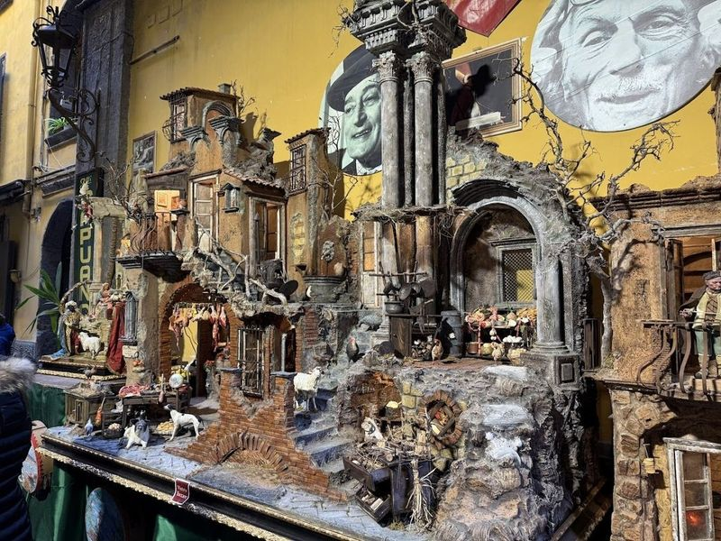
Via S. Gregorio Armeno
Via San Gregorio Armeno is a must-visit destination in Naples, renowned for its vibrant atmosphere and rich tradition of nativity craftsmanship. This charming street is lined with workshops where skilled artisans have been creating intricate religious models and crib scenes since the 18th century. travellers can marvel at the miniature depictions of community life that beautifully frame the figures of Mary, Joseph, and Jesus in their humble stable.
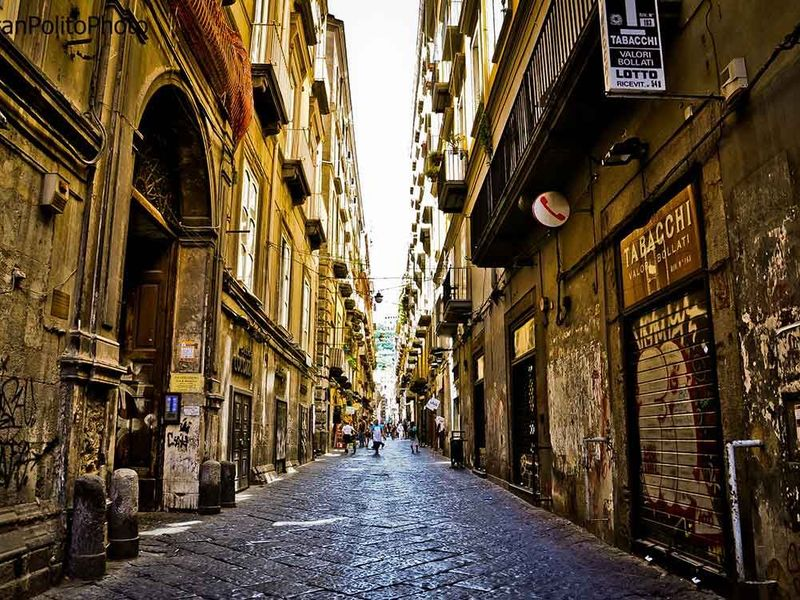
SpaccaNapoli
Spaccanapoli is undoubtedly the heartbeat of Naples, a historic street that has been an essential part of the city since its Greek origins. This vibrant thoroughfare cuts through the Centro Storico, showcasing a lively mix of shops, cafes, and local eateries that invite you to indulge in authentic Neapolitan culture. As you stroll along this bustling avenue, encounter narrow alleys filled with charm and character—perfect for those who love to explore on foot.
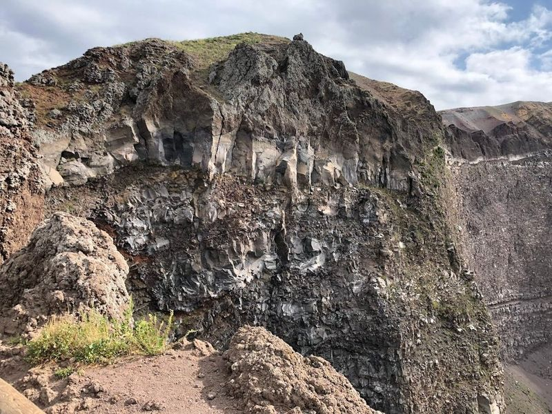
Vesuvius National Park
Vesuvio National Park offers a network of trails that allow travellers to explore the scenery, diverse flora, and fauna around the slopes of an active volcano. A road provides access for drivers up to 1,000 meters, where a shuttle bus takes you to the ticket office. From there, a hike of approximately 200 meters leads to the peak of the volcano.
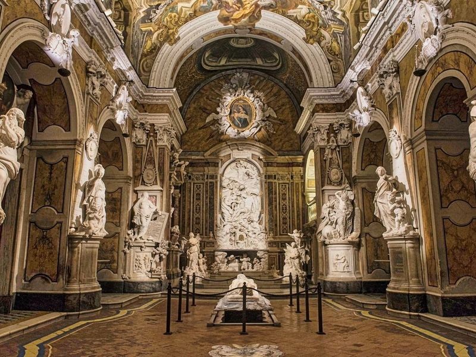
Sansevero Chapel Museum
Nestled in a narrow alley just off San Domenico Maggiore, the Sansevero Chapel Museum is a hidden gem in Naples that art enthusiasts should not miss. Originally constructed in 1590 for the Sansevero family, it underwent an impressive transformation in the 18th century under the direction of Prince Raimondo di Sangro, a fascinating figure known for his contributions to science and art.
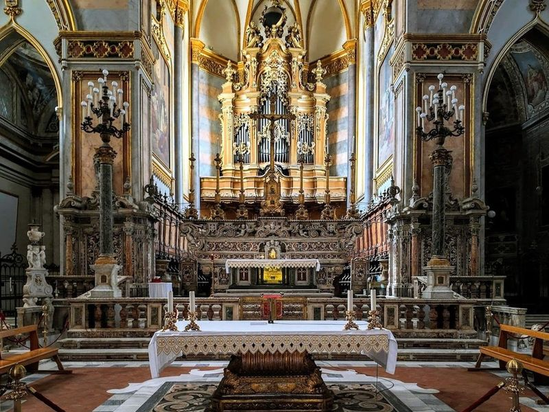
Church of San Domenico Maggiore
San Domenico Maggiore is an elaborate basilica dating back to the early 1300s, In Naples' old town. Built in Gothic style by Carlo d'Angio, it incorporates a pre-existing church from the 10th century BC. The basilica is known for its frescos, sacred relics, and royal family tombs.
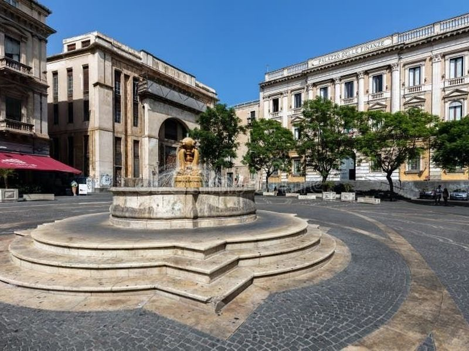
Piazza Vincenzo Bellini
Piazza Vincenzo Bellini is a delightful gem tucked away from the hustle and bustle of Naples, offering a serene escape for those looking to unwind. This charming square boasts an inviting ambiance, perfect for enjoying a refreshing drink while soaking in the surroundings. At its heart lies a striking statue of the renowned composer Bellini, alongside fascinating remnants of ancient Greek city walls dating back to around 600 BC.
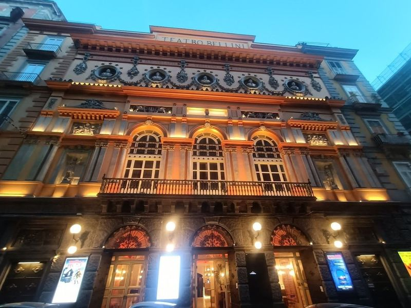
Teatro Bellini di Napoli
Teatro Bellini di Napoli is considered the most beautiful theater in Naples, with its rich and harmonious architecture dating back to 1878. travellers are encouraged not to miss the little theater of the rehearsal room and the Auditorium. The interior features red velvet, comfortable seating, and splendid color harmony. It's a wonderful place for high-quality performances, surrounded by charming bars and restaurants.
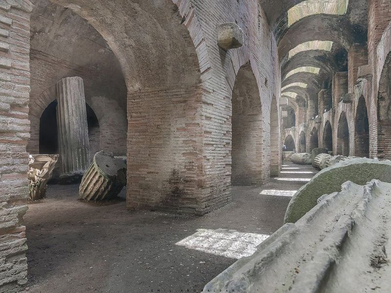
Anfiteatro Flavio Neroniano
Anfiteatro Flavio Neroniano is a remarkable Roman amphitheater dating back to the 1st century AD, capable of accommodating 40,000 spectators. Its underground area is exceptionally well-preserved and offers an immersive experience into the past. The arena features a unique 43-meter hole in the floor that was used for raising and lowering stage sceneries during performances.
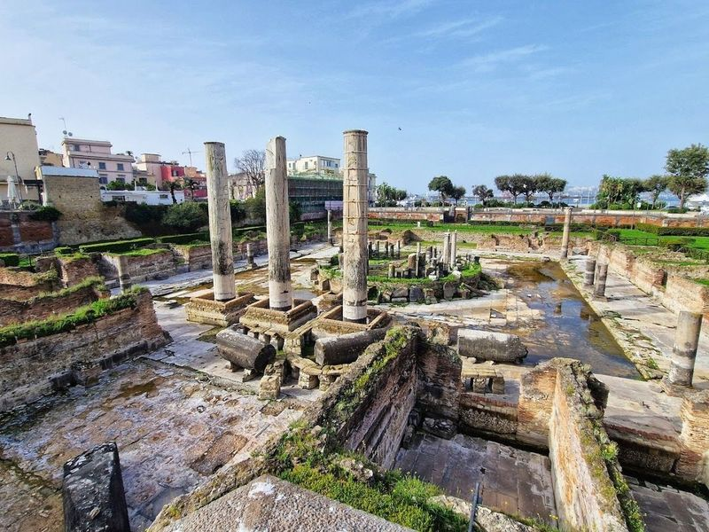
Macellum Temple of Serapis
The Macellum Temple of Serapis is a fascinating site located in Pozzuoli, Italy. This ancient Roman public market features three impressive marble columns amidst well-preserved archaeological ruins. travellers can explore this historical gem along with other nearby attractions such as the Anfiteatro Flavio Neroniano, Lake Avernus, Campi Flegrei volcanic area, Cave of the Sibyl archaeological site, and Aragonese Castle of Baia.
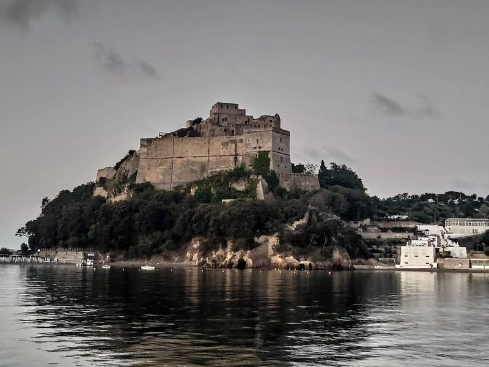
Underwater Archaeological Park of Baia
The Underwater Archaeological Park of Baia is a protected marine area that has been home to the remains of an ancient Roman city since 2002. It offers diving and boat tours for those seeking an extraordinary experience. The park houses underwater archaeological finds, including the nymphaeum of Punta Epitaffio and statues dating back to the time of Emperor Claudius.
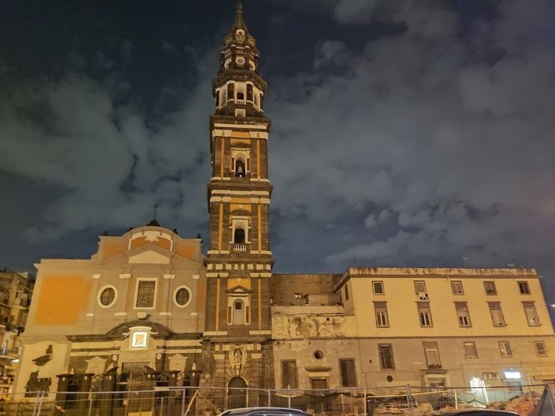
Basilica Santuario di Maria Santissima del Carmine Maggiore
Basilica Santuario di Maria Santissima del Carmine Maggiore is a significant church in Naples, originally a private palace converted into a church. It belongs to the Carmelite order and has its origins in Mount Carmel in Florence. The interiors showcase Neapolitan Baroque style and it's churches in Naples.
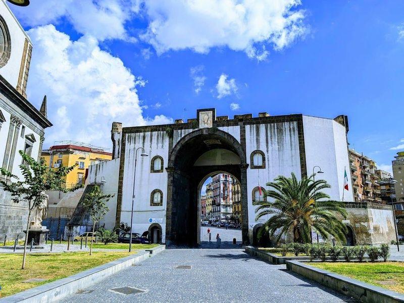
Porta Capuana
Porta Capuana, an ancient city gate located behind Castel Capuano in Naples, was built in 1484 and served as the gateway to the city. The name "Capuana" comes from its orientation towards the city of Capua. This free-standing structure features stone carvings with victorious themes and consists of an elegant arch of white marble adorned with decorations and high reliefs between two towers: the Tower of Virtue and the Tower of Honor.
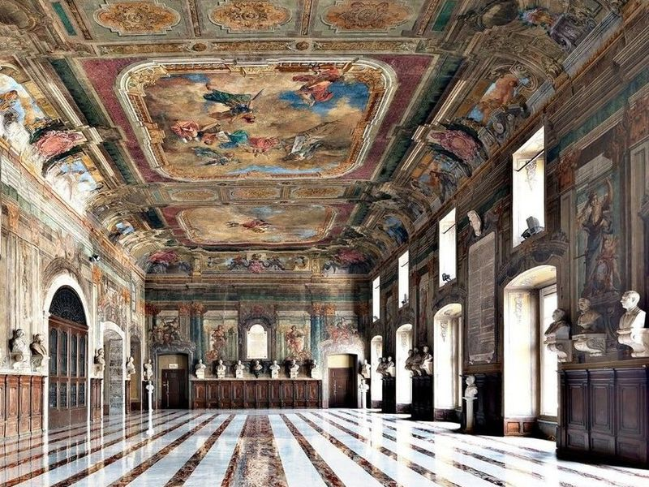
Castel Capuano
Castel Capuano is a 12th-century castle in Naples, Italy, which served as a former hall of justice. The castle offers occasional tours of its interiors and artworks. Nearby, the richly carved 15th-century Porta Capuana stands as a freestanding gate that leads to the neighborhood of Castel Capuano. Although not as dramatic as some other castles in the city, Castel Capuano's medieval structure and courtyard are still worth exploring.
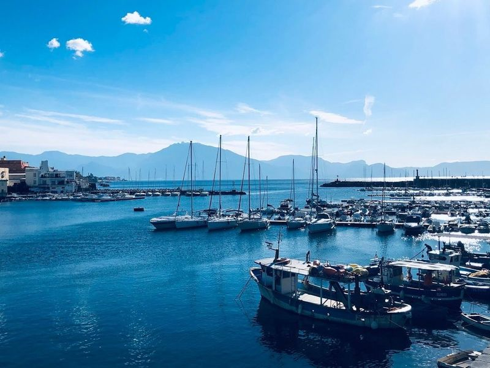
Porto di Torre del Greco
Porto di Torre del Greco is a picturesque coastal town in southern Italy, offering views of the Bay of Naples and serving as the gateway to Mount Vesuvius. travellers can enjoy leisurely walks along the boardwalk, savoring coffee with a backdrop of Vesuvius or capturing sunset scenes. The port also provides access to sailing adventures towards Capri.
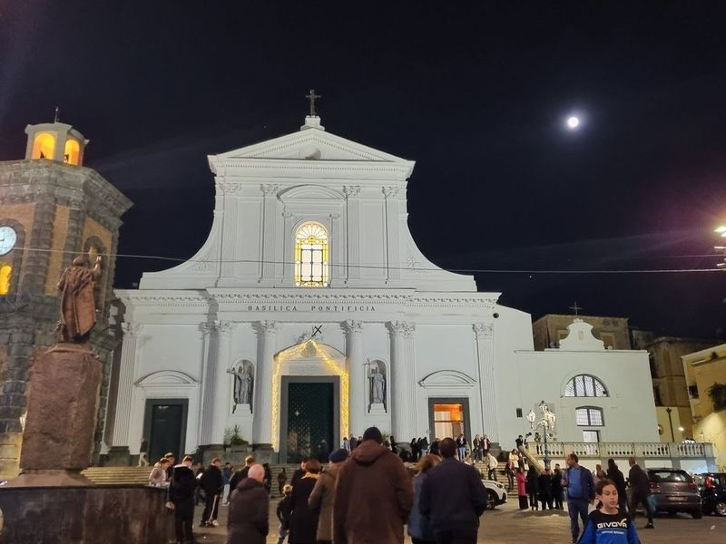
Basilica di Santa Croce
Basilica di Santa Croce is a beautiful and historically significant site in the city, known for its rich history and architectural beauty. The basilica has been rebuilt multiple times after being destroyed by earthquakes and eruptions, with the tower standing as a reminder of its tumultuous past. travellers can also witness the procession of the Virgin on December 7 and explore the impressive stations of the Cross.
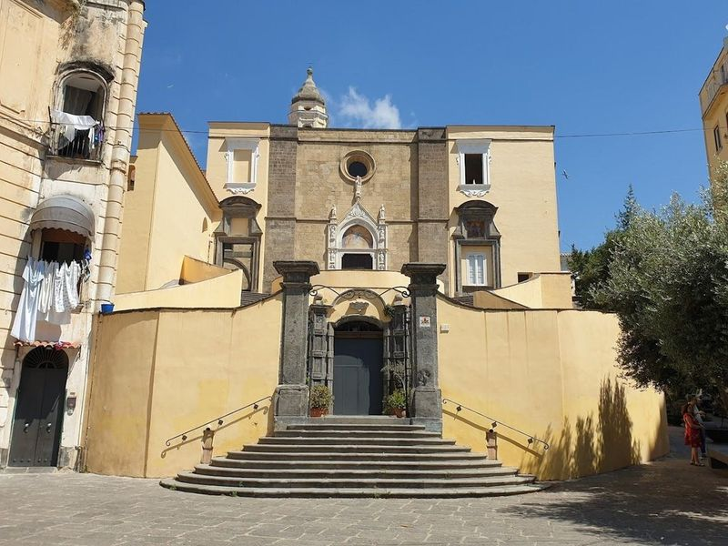
San Giovanni a Carbonara
San Giovanni a Carbonara is a 15th-century Gothic church In Naples, Italy. It has undergone recent restoration work to reveal its Gothic and Renaissance features. Originally built between 1343 and 1418, it served as the pantheon for the last Angevin kings and later became a complex managed by the Augustinian fathers. The church boasts impressive sixteenth-century sculptures and paintings, with King Ladislaus' funeral monument and adjacent park being significant additions.